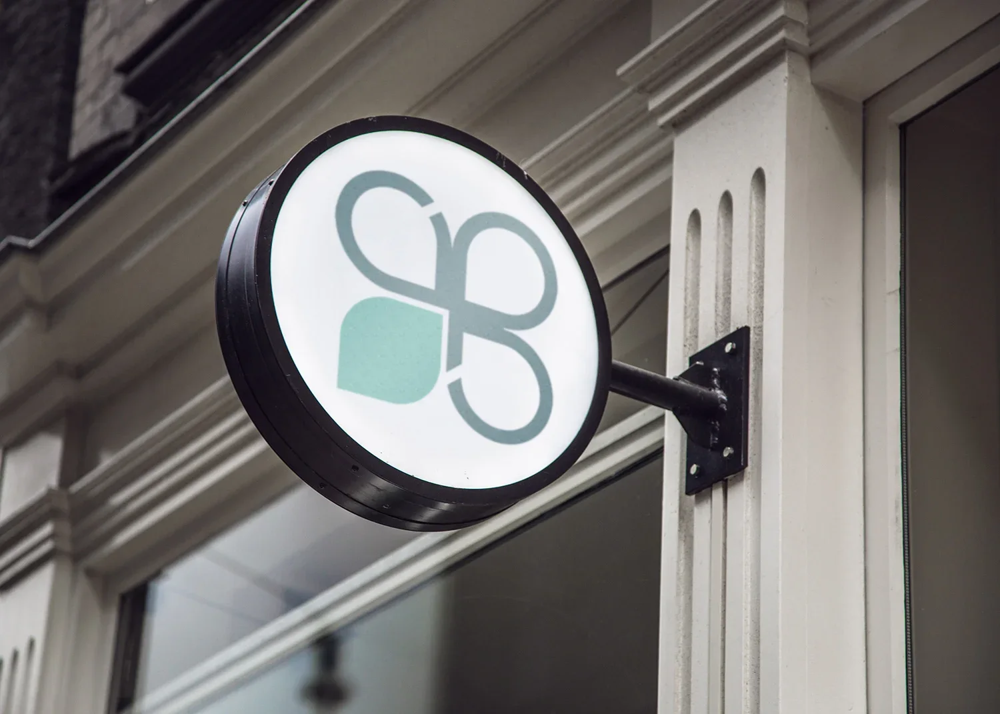
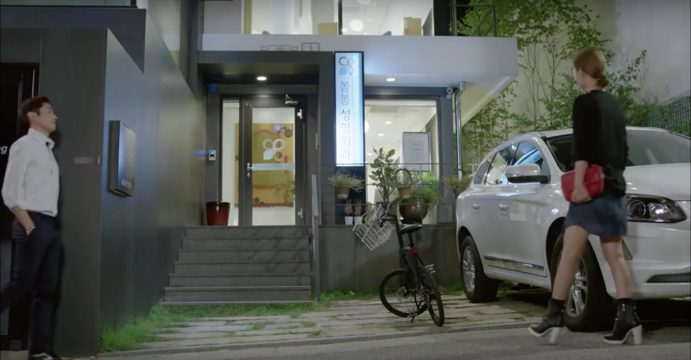
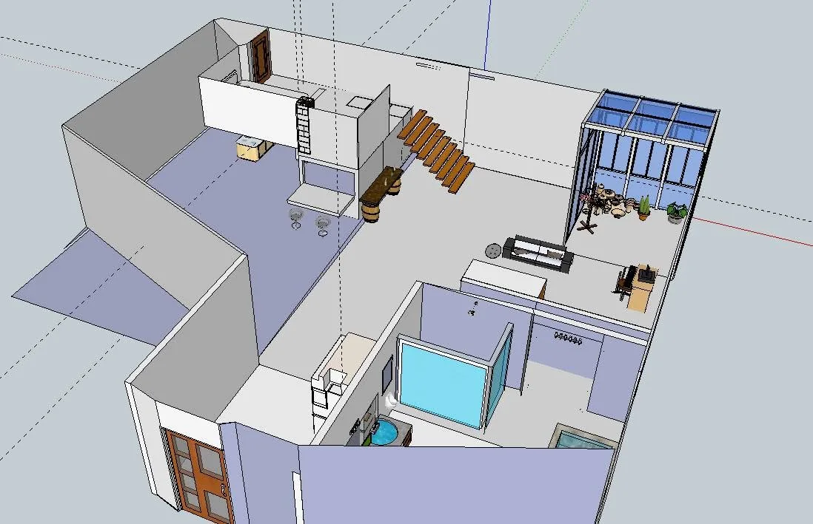
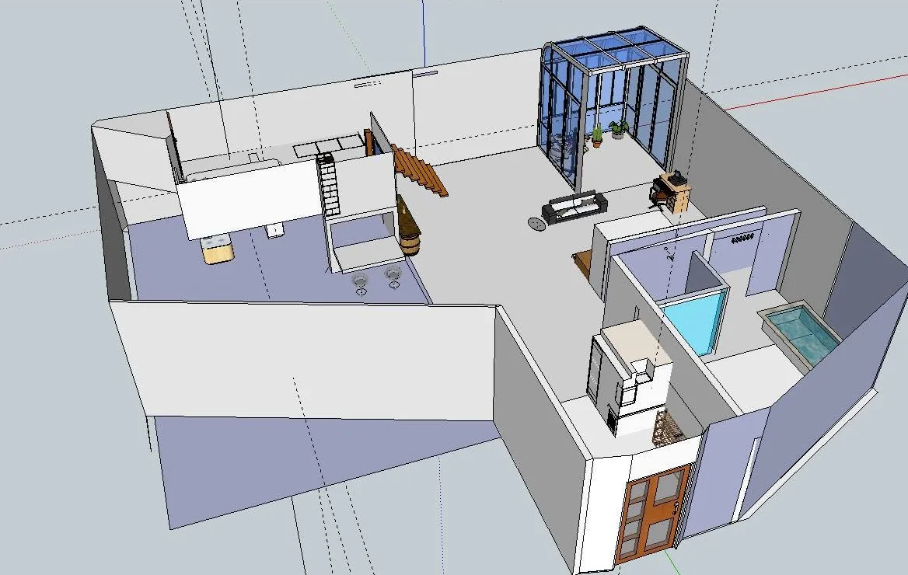

A romantic drama about a woman caught between her current boyfriend, a plastic surgeon, and the ex-boyfriend who returns. I designed the logo for the plastic surgery clinic seen in the show.




THE THREE MUSKETEERS
02 - 삼총사
tvN · 2014
A Joseon-era action romance inspired by Dumas's novel, following Crown Prince Sohyeon and the guards around him. It was tvN's first Sunday drama, planned as three seasons.